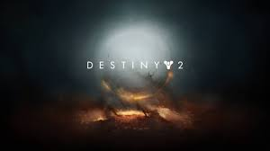
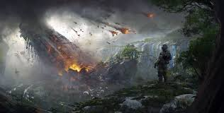
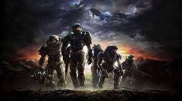
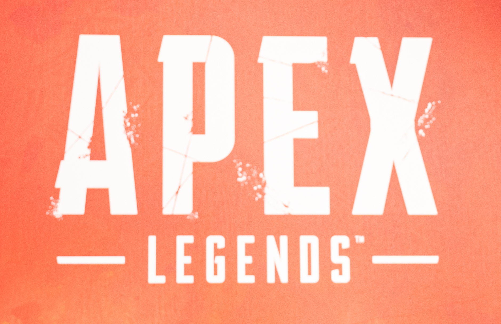
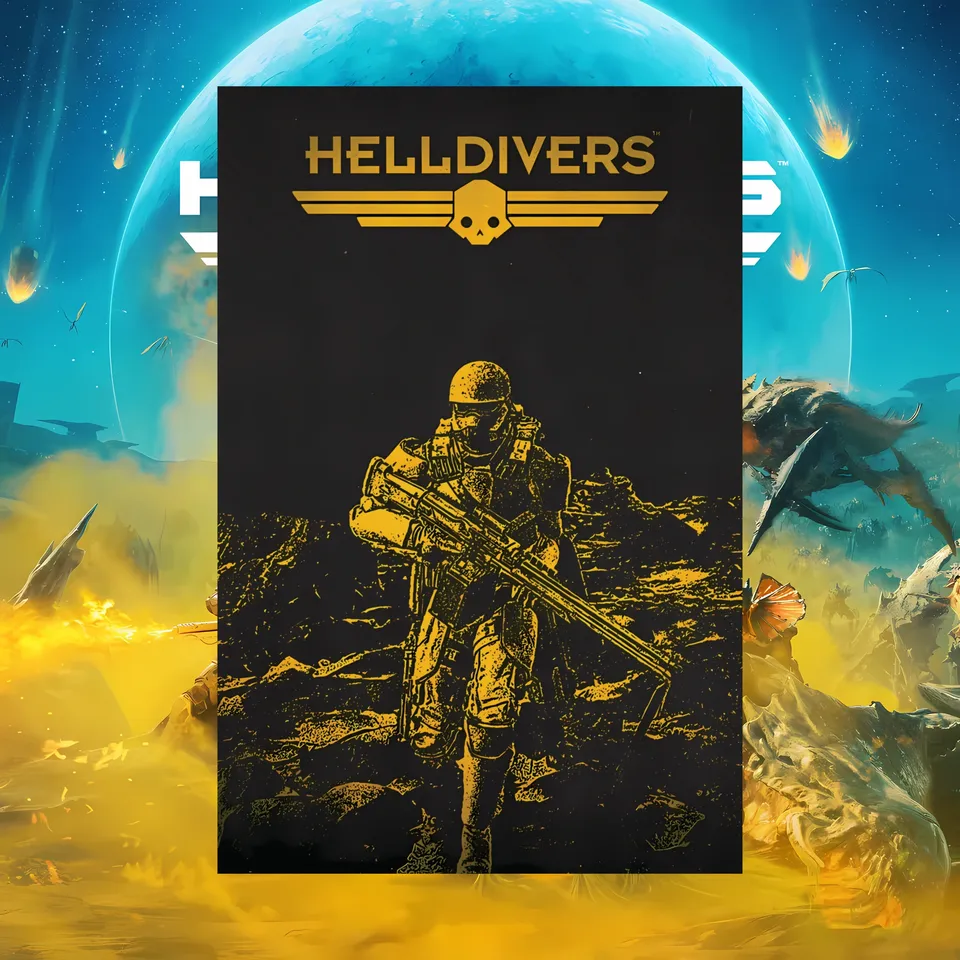

Here is one of my favorite videogames, Destiny 2!
 Wallpaper Destiny 2, by Everton, 2017, Source.I love this looter shooter and have played it for a long time!
Here is one of my favorite videogames, Titanfall 2!
 Wallpaper Titanfall 2, by dima666666789, 2018, Source.I love this game's pvp sandbox and the movement mechanics!
Here is one of my favorite videogames, Halo Reach!
 Wallpaper Halo Reach, by ferante, 2015, Source.I love this campaign and multiplayer from the storytelling to the smooth gameplay!
Here is one of my favorite videogames, Apex Legends!
 Apex Legends Logo, by Wikimedia, 2019, Source.The only Battle Royale on this list, and that's mainly due to the movement and character kits the game provides!
Here is one of my favorite videogames, HellDivers 2!
 Helldivers 2 Liberate Malevelon Creek Campaign Poster, by Barriss Offee Turkey, 2024, Source.What I love about this game is the teamwork built between the community, even though normal matches are with up to four people!